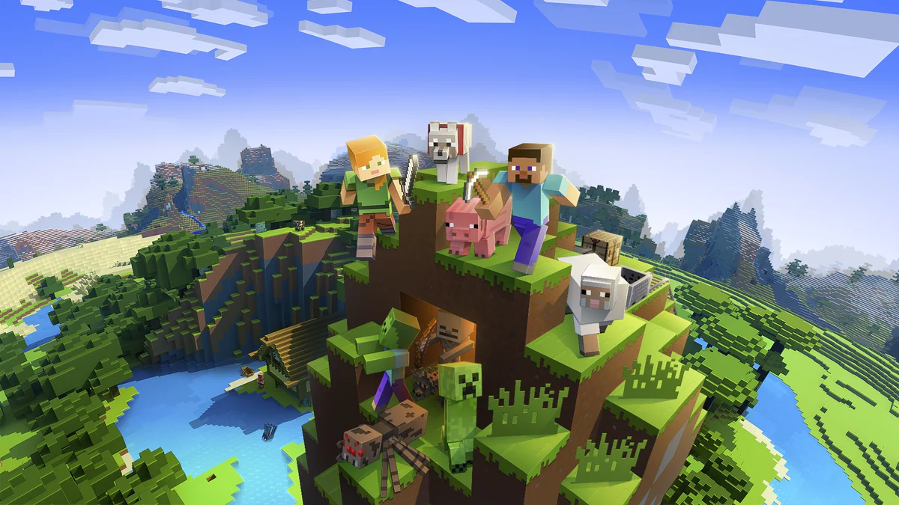
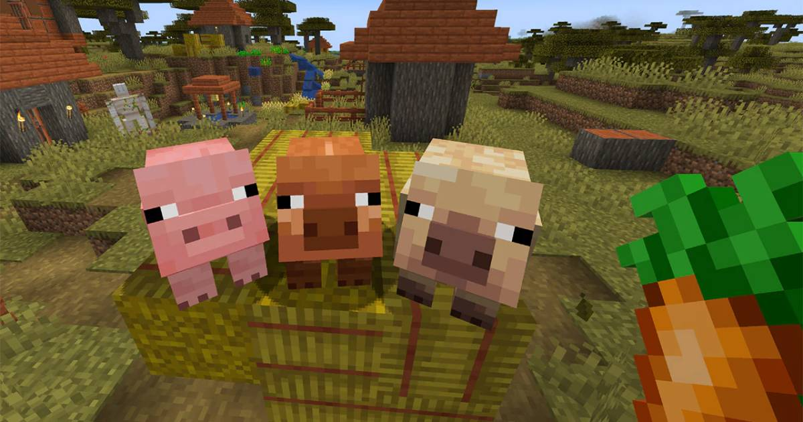

Poradnik do Minecraft
1. Podstawy gry Minecraft
W Minecraft grasz jako postać, która może kopać, budować, walczyć, przetrwać i eksplorować. Gra ma dwie główne formy rozgrywki:
- Tryb przetrwania (Survival): Musisz zdobywać zasoby, walczyć z potworami i przetrwać.
- Tryb kreatywny (Creative): Masz dostęp do wszystkich zasobów i możesz budować bez ograniczeń. Idealny do twórczości i budowania.
- W tym poradniku skupimy się na trybie przetrwania.
2. Pierwsze kroki:
Zbieranie zasobów
- Wydobywanie drewna: Zaczynając, pierwszą rzeczą, którą musisz zrobić, jest zdobycie drewna. Użyj ręki, by ściąć pierwsze drzewa. Uzyskasz drewno, które posłuży Ci do stworzenia narzędzi i innych przydatnych przedmiotów.
- Tworzenie stołu rzemieślniczego: Z 4 kawałków drewna wytwórz deski, a potem użyj ich do stworzenia stołu rzemieślniczego. Dzięki niemu będziesz mógł tworzyć bardziej zaawansowane przedmioty.
Tworzenie narzędzi
- Kilof: Z drewna możesz stworzyć podstawowy kilof. Potem, używając kamienia (wydobytnego z kopania ziemi), możesz wykonać lepszy kilof, który pozwoli Ci na wydobywanie bardziej zaawansowanych materiałów (np. żelazo).
Zbieranie surowców: Zbieraj kamień, węgiel, żelazo i inne minerały, które pozwolą Ci zrobić lepsze narzędzia i bronie.
3. Pierwsza noc:
W Minecraft ważne jest, aby przygotować się na pierwszą noc, ponieważ wtedy zaczynają pojawiać się wrogie potwory, takie jak zombi, szkielety i pająki.
1. Schowek na noc
- Zbuduj schronienie: Na początek wystarczy wykopać dziurę w ziemi lub zbudować prostą chatkę z drewna lub kamienia, aby schować się przed potworami.
2. Oświetlenie: Stwórz pochodnie z węgla i drewna. Użyj ich, aby oświetlić swoje schronienie. Pochodnie zapobiegną pojawianiu się potworów w pobliżu.
3. Zbieranie jedzenia
- Zbieraj jedzenie: Na początek możesz zebrać jagody, upolować zwierzęta (np. świnie, krowy) lub uprawiać rośliny. Pamiętaj, żeby zawsze mieć zapas jedzenia, aby nie umrzeć z głodu.

